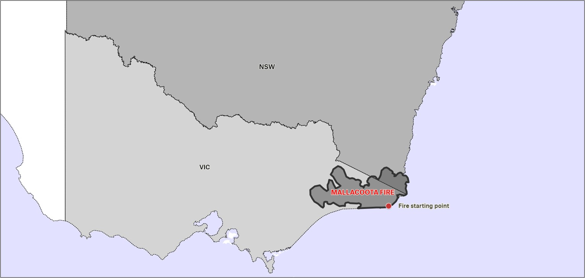

The last map I completed is the reference map which I used the Mallacoota bushfires again to model my map off.
------------------------------------------------------------------------------------------------------------------------------------------------------------------
The map is shown here.
